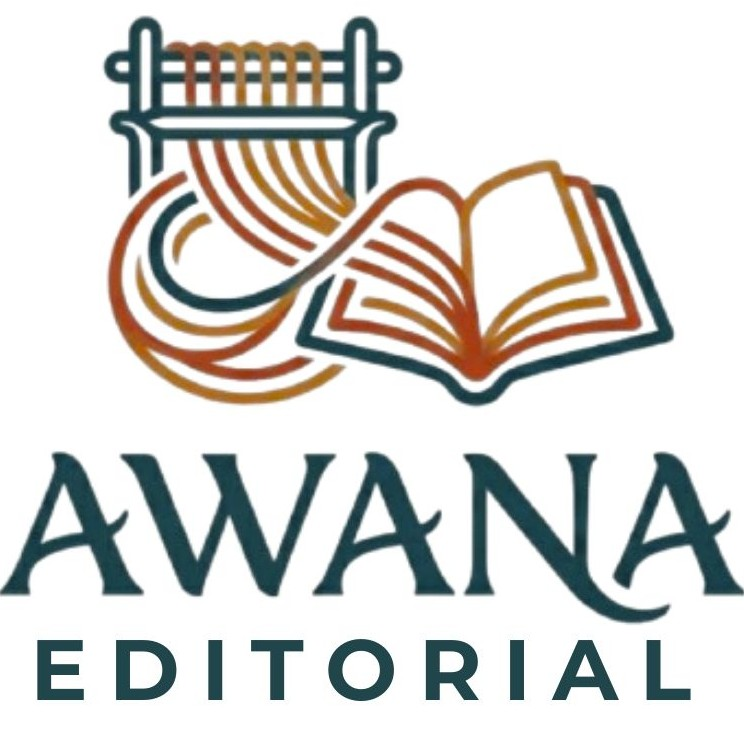
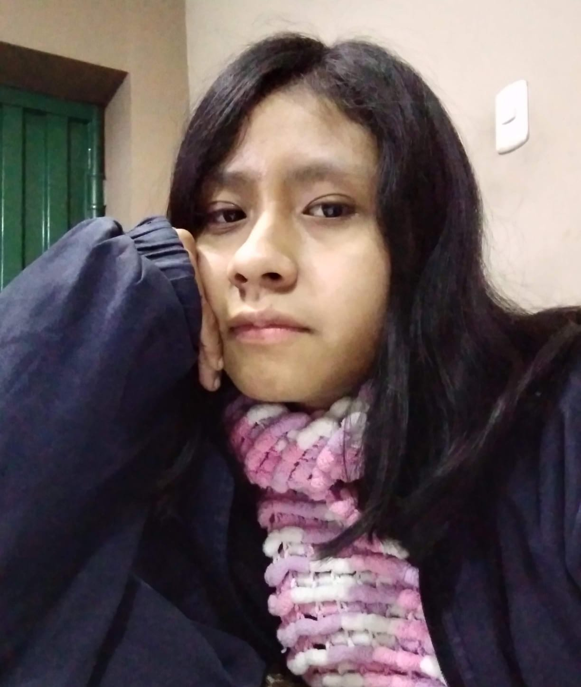

En la lengua quechua. Awana es el telar: el espacio originario donde el hilo suelto seconvierte en trama, en cuerpo y en memoria.

Ser una editorial artesanal dedicada a promover y difundir la literatura peruana mediante la publicación de obras de narrativa, poesía y tradición oral, valorando la diversidad de voces, memorias y expresiones culturales que conforman la riqueza literaria del Perú.

Para el año 2030, consolidarnos como una editorial independiente reconocida por la difusión y el estudio de la literatura peruana. Buscamos posicionarnos en espacios educativos, ferias y comunidades lectoras mediante publicaciones innovadoras y de calidad que rescaten la narrativa, la poesía y la tradición oral del Perú, destacando por el valor artístico y la elaboración cuidadosa de nuestros libros.


Fomentar el hábito lector y fortalecer la identidad cultural en niños, jóvenes y adultos. A través de nuestras publicaciones, buscamos fortalecer los vínculos con la cultura peruana.

Garantizar la calidad de los contenidos y de la presentación física de cada publicación, cuidando el valor literario, estético y material de cada proyecto editorial.

Brindar espacios de visibilidad y publicación a escritores emergentes y propuestas literarias innovadoras.